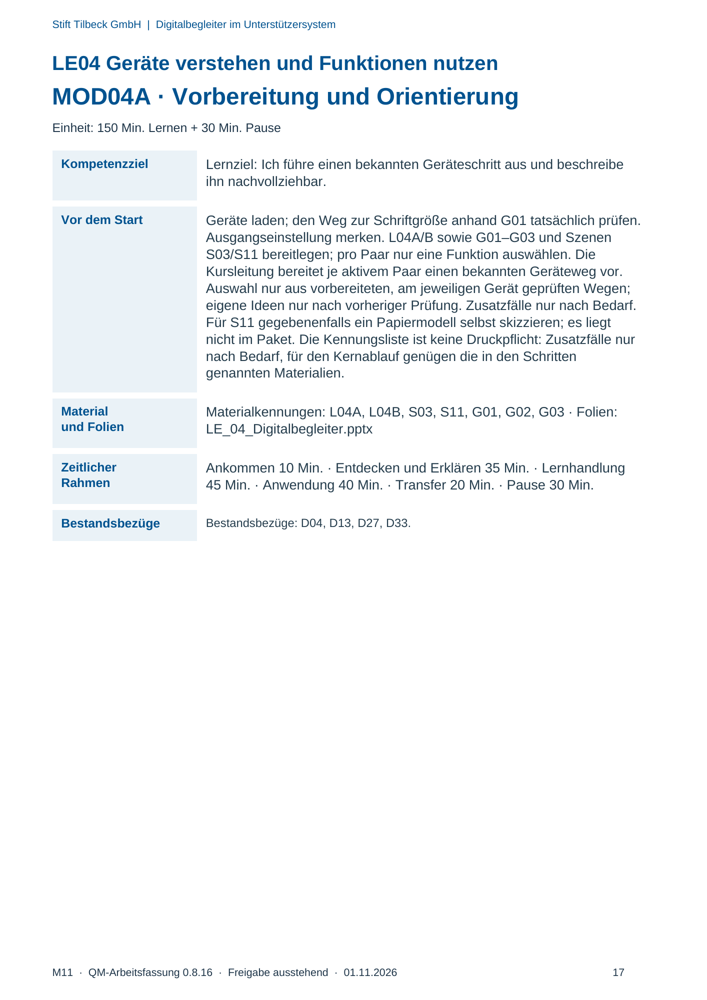
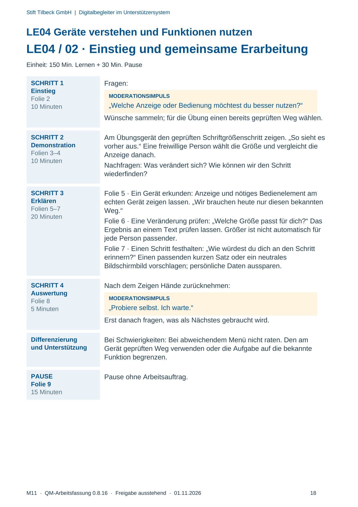
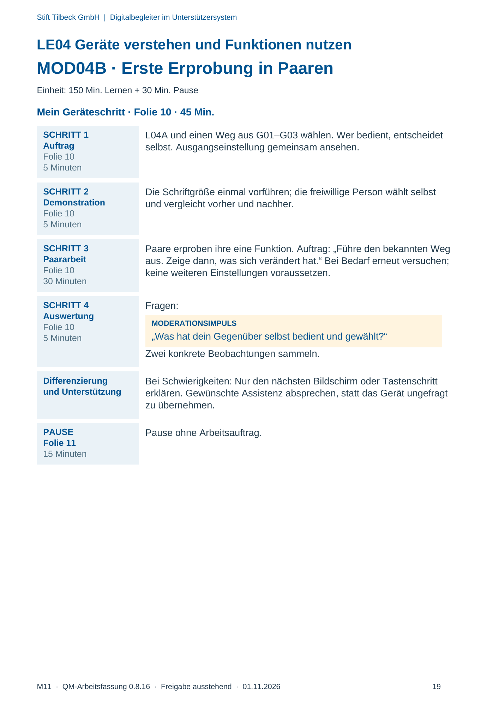
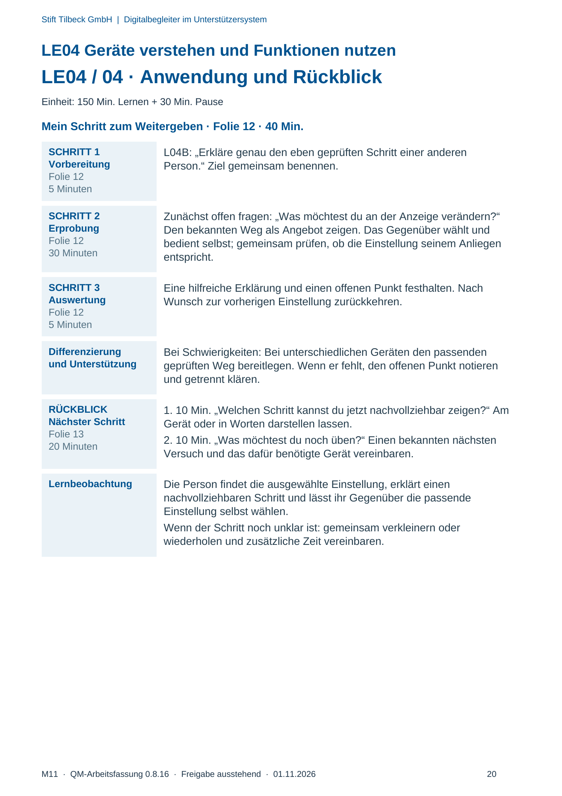

M11 · Originalseite 17, 18, 19, 20
Durchführungshilfe
Gezielte Original-Druckauswahl.
Fragen und Ankreuzfelder werden auf dem Ausdruck bearbeitet. Die Lesefassung speichert keine Antworten.
Lesefassung · Seite 17
Stift Tilbeck GmbH | Digitalbegleiter im Unterstützersystem
LE04 Geräte verstehen und Funktionen nutzen
MOD04A · Vorbereitung und Orientierung
Einheit: 150 Min. Lernen + 30 Min. Pause
Kompetenzziel Lernziel: Ich führe einen bekannten Geräteschritt aus und beschreibe
ihn nachvollziehbar.
Vor dem Start Geräte laden; den Weg zur Schriftgröße anhand G01 tatsächlich prüfen.
Ausgangseinstellung merken. L04A/B sowie G01–G03 und Szenen
S03/S11 bereitlegen; pro Paar nur eine Funktion auswählen. Die
Kursleitung bereitet je aktivem Paar einen bekannten Geräteweg vor.
Auswahl nur aus vorbereiteten, am jeweiligen Gerät geprüften Wegen;
eigene Ideen nur nach vorheriger Prüfung. Zusatzfälle nur nach Bedarf.
Für S11 gegebenenfalls ein Papiermodell selbst skizzieren; es liegt
nicht im Paket. Die Kennungsliste ist keine Druckpflicht: Zusatzfälle nur
nach Bedarf, für den Kernablauf genügen die in den Schritten
genannten Materialien.
Material
und Folien
Materialkennungen: L04A, L04B, S03, S11, G01, G02, G03 · Folien:
LE_04_Digitalbegleiter.pptx
Zeitlicher
Rahmen
Ankommen 10 Min. · Entdecken und Erklären 35 Min. · Lernhandlung
45 Min. · Anwendung 40 Min. · Transfer 20 Min. · Pause 30 Min.
Bestandsbezüge Bestandsbezüge: D04, D13, D27, D33.
Originalseite ansehen

Lesefassung · Seite 18
Stift Tilbeck GmbH | Digitalbegleiter im Unterstützersystem
LE04 Geräte verstehen und Funktionen nutzen
LE04 / 02 · Einstieg und gemeinsame Erarbeitung
Einheit: 150 Min. Lernen + 30 Min. Pause
SCHRITT 1
Einstieg
Folie 2
10 Minuten
Fragen:
MODERATIONSIMPULS
„Welche Anzeige oder Bedienung möchtest du besser nutzen?“
Wünsche sammeln; für die Übung einen bereits geprüften Weg wählen.
SCHRITT 2
Demonstration
Folien 3–4
10 Minuten
Am Übungsgerät den geprüften Schriftgrößenschritt zeigen. „So sieht es
vorher aus.“ Eine freiwillige Person wählt die Größe und vergleicht die
Anzeige danach.
Nachfragen: Was verändert sich? Wie können wir den Schritt
wiederfinden?
SCHRITT 3
Erklären
Folien 5–7
20 Minuten
Folie 5 · Ein Gerät erkunden: Anzeige und nötiges Bedienelement am
echten Gerät zeigen lassen. „Wir brauchen heute nur diesen bekannten
Weg.“
Folie 6 · Eine Veränderung prüfen: „Welche Größe passt für dich?“ Das
Ergebnis an einem Text prüfen lassen. Größer ist nicht automatisch für
jede Person passender.
Folie 7 · Einen Schritt festhalten: „Wie würdest du dich an den Schritt
erinnern?“ Einen passenden kurzen Satz oder ein neutrales
Bildschirmbild vorschlagen; persönliche Daten aussparen.
SCHRITT 4
Auswertung
Folie 8
5 Minuten
Nach dem Zeigen Hände zurücknehmen:
MODERATIONSIMPULS
„Probiere selbst. Ich warte.“
Erst danach fragen, was als Nächstes gebraucht wird.
Differenzierung
und Unterstützung
Bei Schwierigkeiten: Bei abweichendem Menü nicht raten. Den am
Gerät geprüften Weg verwenden oder die Aufgabe auf die bekannte
Funktion begrenzen.
PAUSE
Folie 9
15 Minuten
Pause ohne Arbeitsauftrag.
Originalseite ansehen

Lesefassung · Seite 19
Stift Tilbeck GmbH | Digitalbegleiter im Unterstützersystem
LE04 Geräte verstehen und Funktionen nutzen
MOD04B · Erste Erprobung in Paaren
Einheit: 150 Min. Lernen + 30 Min. Pause
Mein Geräteschritt · Folie 10 · 45 Min.
SCHRITT 1
Auftrag
Folie 10
5 Minuten
L04A und einen Weg aus G01–G03 wählen. Wer bedient, entscheidet
selbst. Ausgangseinstellung gemeinsam ansehen.
SCHRITT 2
Demonstration
Folie 10
5 Minuten
Die Schriftgröße einmal vorführen; die freiwillige Person wählt selbst
und vergleicht vorher und nachher.
SCHRITT 3
Paararbeit
Folie 10
30 Minuten
Paare erproben ihre eine Funktion. Auftrag: „Führe den bekannten Weg
aus. Zeige dann, was sich verändert hat.“ Bei Bedarf erneut versuchen;
keine weiteren Einstellungen voraussetzen.
SCHRITT 4
Auswertung
Folie 10
5 Minuten
Fragen:
MODERATIONSIMPULS
„Was hat dein Gegenüber selbst bedient und gewählt?“
Zwei konkrete Beobachtungen sammeln.
Differenzierung
und Unterstützung
Bei Schwierigkeiten: Nur den nächsten Bildschirm oder Tastenschritt
erklären. Gewünschte Assistenz absprechen, statt das Gerät ungefragt
zu übernehmen.
PAUSE
Folie 11
15 Minuten
Pause ohne Arbeitsauftrag.
Originalseite ansehen

Lesefassung · Seite 20
Stift Tilbeck GmbH | Digitalbegleiter im Unterstützersystem
LE04 Geräte verstehen und Funktionen nutzen
LE04 / 04 · Anwendung und Rückblick
Einheit: 150 Min. Lernen + 30 Min. Pause
Mein Schritt zum Weitergeben · Folie 12 · 40 Min.
SCHRITT 1
Vorbereitung
Folie 12
5 Minuten
L04B: „Erkläre genau den eben geprüften Schritt einer anderen
Person.“ Ziel gemeinsam benennen.
SCHRITT 2
Erprobung
Folie 12
30 Minuten
Zunächst offen fragen: „Was möchtest du an der Anzeige verändern?“
Den bekannten Weg als Angebot zeigen. Das Gegenüber wählt und
bedient selbst; gemeinsam prüfen, ob die Einstellung seinem Anliegen
entspricht.
SCHRITT 3
Auswertung
Folie 12
5 Minuten
Eine hilfreiche Erklärung und einen offenen Punkt festhalten. Nach
Wunsch zur vorherigen Einstellung zurückkehren.
Differenzierung
und Unterstützung
Bei Schwierigkeiten: Bei unterschiedlichen Geräten den passenden
geprüften Weg bereitlegen. Wenn er fehlt, den offenen Punkt notieren
und getrennt klären.
RÜCKBLICK
Nächster Schritt
Folie 13
20 Minuten
1. 10 Min. „Welchen Schritt kannst du jetzt nachvollziehbar zeigen?“ Am
Gerät oder in Worten darstellen lassen.
2. 10 Min. „Was möchtest du noch üben?“ Einen bekannten nächsten
Versuch und das dafür benötigte Gerät vereinbaren.
Lernbeobachtung Die Person findet die ausgewählte Einstellung, erklärt einen
nachvollziehbaren Schritt und lässt ihr Gegenüber die passende
Einstellung selbst wählen.
Wenn der Schritt noch unklar ist: gemeinsam verkleinern oder
wiederholen und zusätzliche Zeit vereinbaren.
Originalseite ansehen
